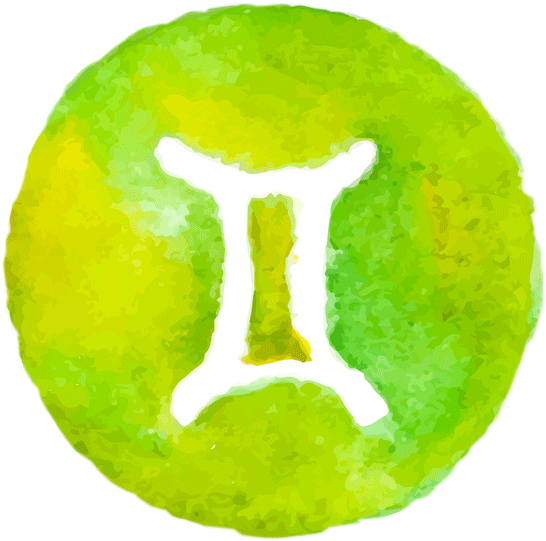
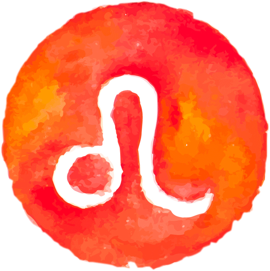
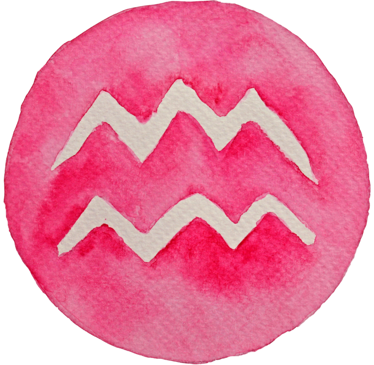

Digite um Signo:
Curioso e bem humorado, quem tem sol no signo de Gêmeos costuma fazer amigos sem grandes
dificuldades, tem uma verdadeira vocação para manter um círculo social diverso, com todas as
tribos possíveis.
Dois em um? Geminianos e geminianas podem ter uma personalidade versátil, que
se adapta a diversas formas de pensamento e podem transitar tranquilamente por dois lados de uma
questão. Mas atenção! Com imaturidade essa facilidade de mediação pode se transformar em
falsidade.
A combinação do elemento ar com a natureza mutável do signo indica uma facilidade de adaptação
no signo de Gêmeos, além de uma inquietude por novos desafios, aprendizados e experiências. Se
você tem este signo forte no Mapa Astral, ou seja, ascendente, lua ou um acúmulo de planetas em
Gêmeos signo, provavelmente, odeia uma rotina massante ou exaustiva. O planeta Mercúrio como
regente relaciona Gêmeos à criatividade e à comunicação.
O signo de Peixes é o décimo segundo signo, portanto, o último do Zodíaco. Esse
é o signo mais
elevado e representa o último estágio de aprendizado da Escola da Vida.
Peixes está ligado às mais raras virtudes humanas, tais como a compreensão, humildade,
filantropia, compaixão, empatia, sensibilidade superior e amor devocional.
O signo de Peixes é capaz de se doar totalmente a algum objetivo e de esquecer seus próprios
interesses, até financeiros. Além disso, em Peixes encontramos a ausência de imediatismo e a
predisposição para mergulhar fundo no que é sagrado, conforme explica a astróloga Maria Eugenia
de Castro.
Dinâmicos e sinceros, quem tem sol em Áries costuma ter um forte contato com a sua
individualidade, que pode parecer egoísmo em alguns momentos. Arianas e arianos tendem a ser
alegres e muito extrovertidos, mas também podem ser bastante competitivos e soar um pouco
autoritários. Podem preferir trabalhar sozinhos, mas costumam ter um ótimo espírito de
liderança.
Quem tem o signo de Áries em posição marcante no Mapa Astral de nascimento, geralmente, não se
cansa com facilidade; sua disposição e resistência físicas podem ser invejadas por todos os
outros signos. Áries é direto para alcançar suas metas e, em casos de pouca maturidade, arianas
e arianos podem gostar de criar rivalidades e ser um tanto quanto mandões. Marte como regente
reforça o perfil guerreiro do signo e também sinaliza possíveis explosões emocionais.
Vaidade e bom humor podem ser marca registrada na personalidade de quem tem o sol no signo de
Leão. Carismáticos e naturalmente destacáveis, leoninas e leoninos típicos tendem a ser bem
extrovertidos. Sua generosidade também se destaca em seu modo de amar, a felicidade da outra
pessoa na relação também é motivo de sua própria alegria.
A nobreza de caráter é bem presente em quem tem um acúmulo de planetas no signo leão, que são
pessoas incapazes de ter comportamentos mesquinhos. O sol como regente de Leão, destaca a
tendência natural do signo ser o centro das atenções. Nativos do signo de Leão tem energia de
sobra e costuma ser a alma da festa, daqueles que dançam a noite inteira sem maiores esforços.
Por outro lado, o Leão signo pode sinalizar certo autoritarismo e prepotência. Leoninas e
leoninos precisam tomar cuidado para que o ego ferido não desencadeia comportamentos arrogantes
e um tanto quanto explosivos.
Emotivos e sensíveis, quem tem sol no signo de Câncer costuma ter uma forte conexão com as
lembranças do passado, que podem contribuir para posturas muito sentimentais ou até
melancólicas. Cancerianas e cancerianos podem ser muito apegados, mas costumam ter um cuidado
ímpar com todas as pessoas que amam. Tendem a buscar segurança e proteção, e isso pode se
demonstrar com comportamentos no dia a dia que não oferecem grandes riscos.
Quem tem o signo de Câncer forte no Mapa Astral de nascimento se identifica com um forte
instinto para ação guiado pelos sentimentos. Câncer consegue traçar estratégias sinuosas para
alcançar seus objetivos e, em casos com pouca maturidade, podem usar de manipulação. A Lua como
regente reforça o perfil maternal/ paternal do signo e também sinaliza para possíveis oscilações
emocionais.



Data
Planeta Regente
Elemento
Simbolo